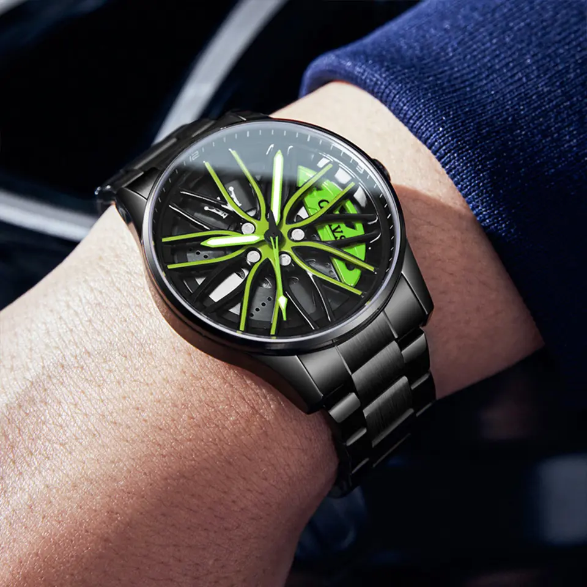

Red Brake Caliper Spinner
Combining strength and detail, this model features a rotating dial mimicking a sports wheel, accented by a bold red brake caliper.
Precision Rim Design
Crafted with automotive precision, this timepiece merges performance and aesthetics with a sleek black and red contrast.

Neon Green Speed Edition
Vibrant green highlights add a high-energy twist to this watch, perfect for those who love speed and style.

Metallic Rotor Elegance
Showcasing metallic accents and a futuristic design, this piece captures the essence of luxury motorsports.
Sportline Minimal Red
A minimalist approach with sleek red details and a bold brake rotor centerpiece. Pure automotive inspiration.